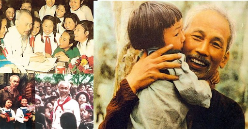
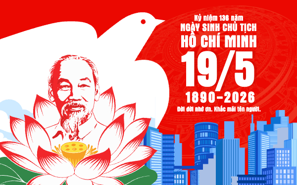

BÁC HỒ TRONG TRÁI TIM EM
“Thiếu nhi Việt Nam kính yêu Bác Hồ”


“Thiếu nhi Việt Nam kính yêu Bác Hồ”
🌻 Quảng Ninh – Nơi ghi dấu 9 lần Bác Hồ về thăm, mãi mãi khắc ghi trong lòng dân!
🌻 "Chúng em luôn làm theo lời Bác!"
🌻 "Chúng em luôn học tập và làm theo lời Bác!"
“Tháp Mười đẹp nhất bông sen
Việt Nam đẹp nhất có tên Bác Hồ.”
🎶 Nhấn để nghe nhạc và đọc thơ
🌻 Em hãy gửi những điều em muốn nói về Bác cho cô giáo chủ nhiệm để cập nhật lên báo điện tử qua Zalo
🌻 Hãy trả lời các câu hỏi về Bác Hồ